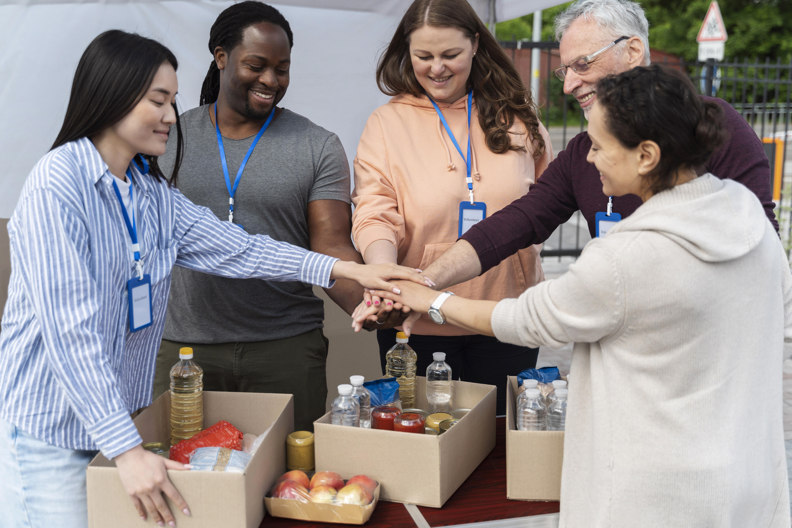
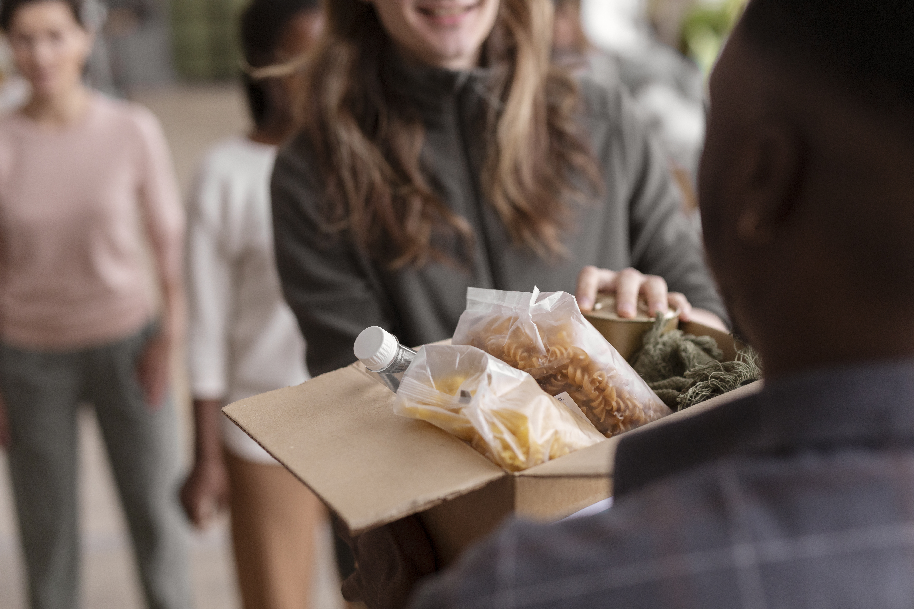
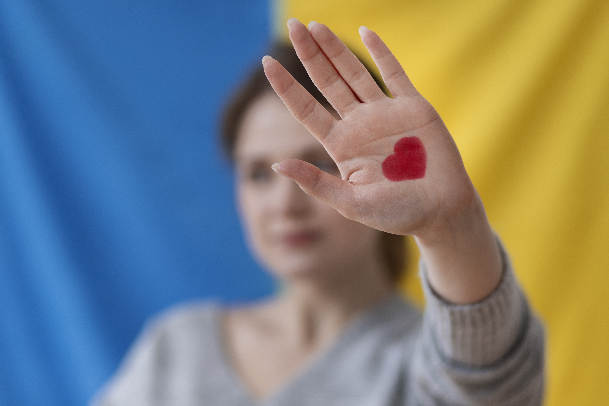
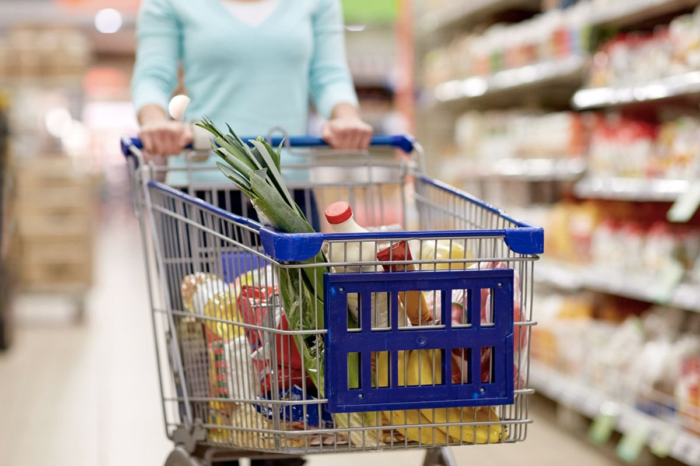

Chi Siamo?
La Mensa del Padre Nostro è una ODV che recupera ogni giorno le eccedenze alimentari e le distribuisce a chi non se le può permettere ed è in difficoltà. Ma il nostro impegno va oltre il semplice gesto del dare: vogliamo costruire relazioni, ascoltare storie, restituire dignità.

Volontari
I nostri volontari non sono eroi, ma persone comuni che credono nel valore della solitarietà.
Sono le azioni e la capacità di coinvolgere gli altri a fare davvero la differenza.
Vuoi diventare anche tu un Volontario?
Chiama il +39 351 012 4334
Famiglie Solidali
Un numeroso gruppo di 256 FAMIGLIE collabora con la Mensa del Padre Nostro portando alimenti a lunga conservazione
presso il centro di distribuzione in Piazza Soldini 8.
Se anche tu vuoi far parte delle Famiglie Solidali Chiama il +39 351 012 4334

Come Aiutarci
Dona il tuo 5X1000
Nella dichiarazione dei redditi inserisci il nostro
codice fiscale: 90045010122

Donazione con bonifico
Intestatario: LA MENSA DEL PADRE NOSTRO ODV
IBAN: IT58C0306909606100000077914
Causale: Donazione a La Mensa del Padre Nostro ODV
